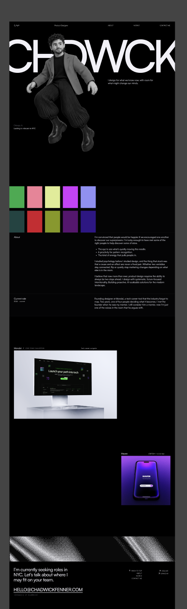
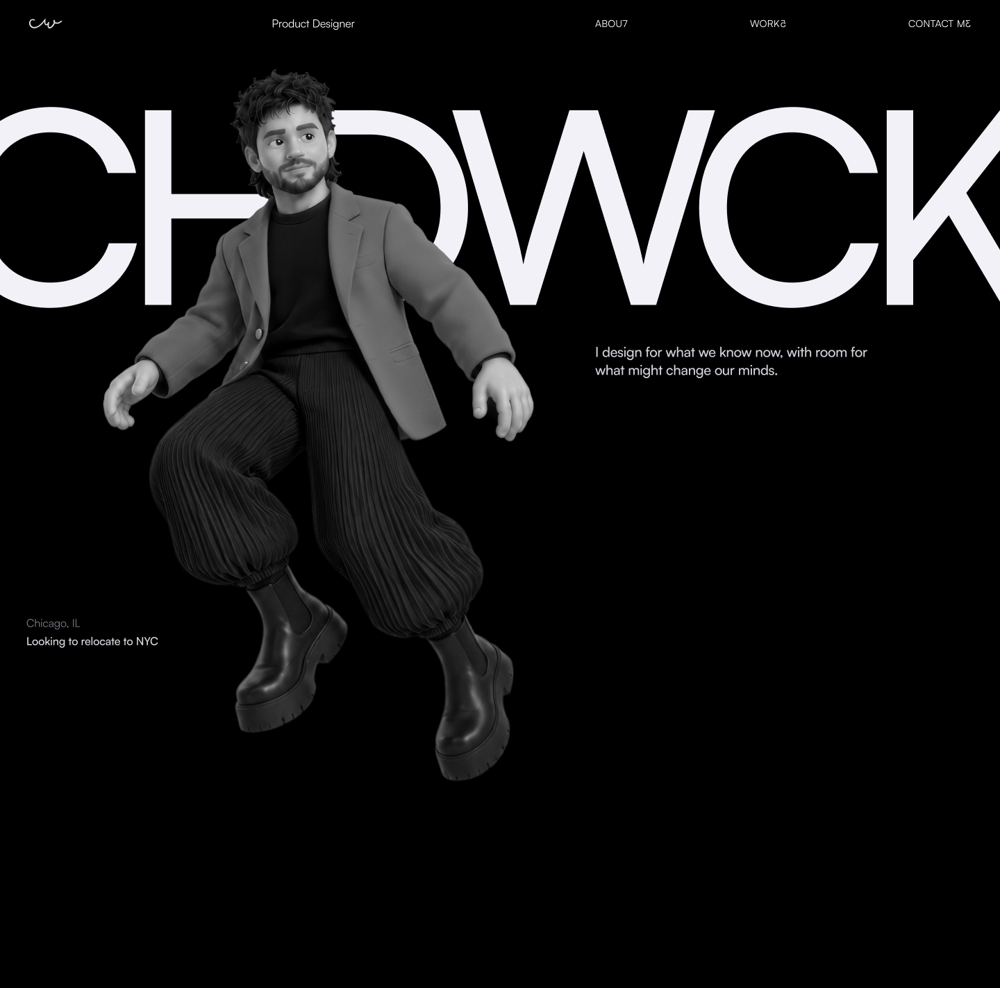

All ten once
The compact block acts as the page's color signature, not a repeated grid pattern.
The site does not need five middle shades. The small two-row block works because each column has a bright note and a deep note, held together by black space.

It sits small and left aligned after a long grayscale hero. The bright top row and darker bottom row arrive together, then the page returns to black. Enlarging every swatch and spreading color evenly across the page changes the effect.
Each upper tile is 19 to 37 OKLCH lightness points above its partner. The red below pink becomes more chromatic as it gets darker.
Mondai brings green and Haven brings violet later in the scroll. Those are project images, not five more jobs for the brand palette.
Keep the complete block as one signature moment. Elsewhere, use one column as a pair when color has a clear job. Black and white still do the structural work.
The compact block acts as the page's color signature, not a repeated grid pattern.
A later accent can use a bright and deep partner without bringing back the entire spectrum.
Brand color should not overwrite the Mondai or Haven work shown in the case study images.
The pink and red pair keeps the internal contrast without bringing all five columns into every section. This is a usage study, not a proposed page component.
This keeps light and dark contrast across the row, but loses the paired relationship inside each column. It is a fallback, not the recommended version.
This is a first test, not a final recolor. The red is the sharpest dark note in the original block and stays distinct from the green and violet project images.

The reference image remains grayscale here. The jacket needs a real composite in Figma before judging whether this color overpowers the person or the large white name.